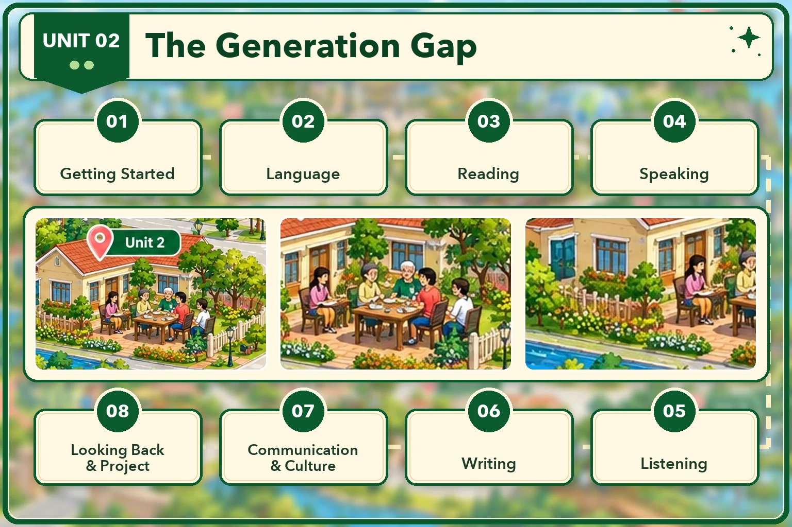

Lesson 1 · Getting started — What is a generation gap? Lesson 2 · Language Lesson 3 · Reading: Different generations Lesson 4 · Speaking: Talking about the different generations of a family Lesson 5 · Listening: A conversation about family conflicts Lesson 6 · Writing: An opinion essay about limiting teenagers' screen time Lesson 7 · Communication and Culture: The generation gap in Asian American families Lesson 8 · Looking back and Project: A survey on generational differencesĐã dựng: Lesson 1, 2, 3, 4, 5, 6, 7, 8. Đủ cả 8 tiết. Dựng xong tiết nào thì mở khoá thẻ đó.